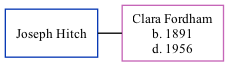

Joseph C Hitch
[ Home ] | [ Calendar ] | [ Surnames Index ] | [ Family History ]Joseph Hitch and married Clara Fordham in Thanet, Kent, England around Aug 19111.
Citations
- England & Wales Marriages 1837-2005 - Findmypast
Family Tree
Generated by ged2site. Last updated on Nov 13, 2024